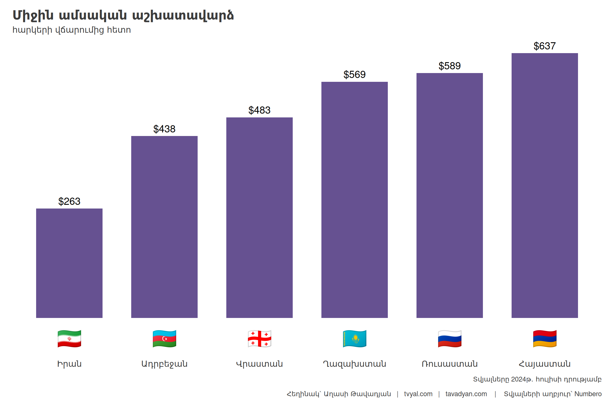
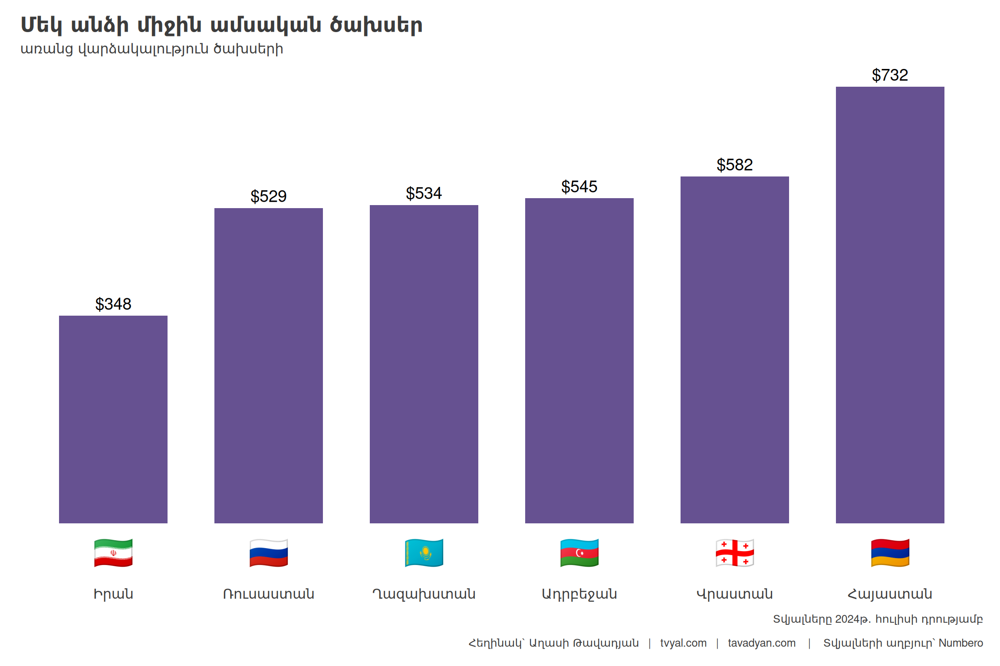
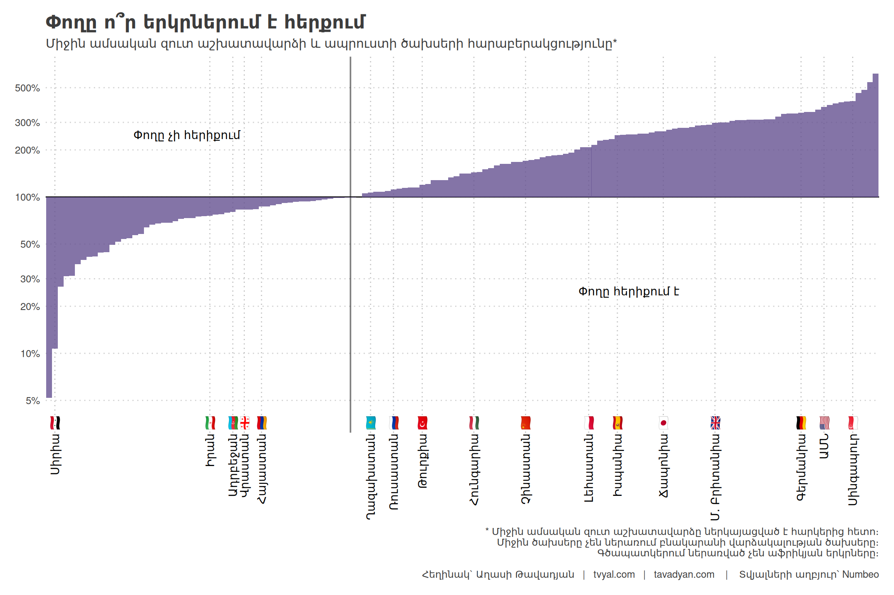
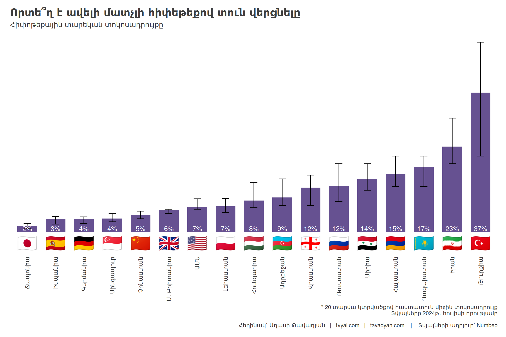
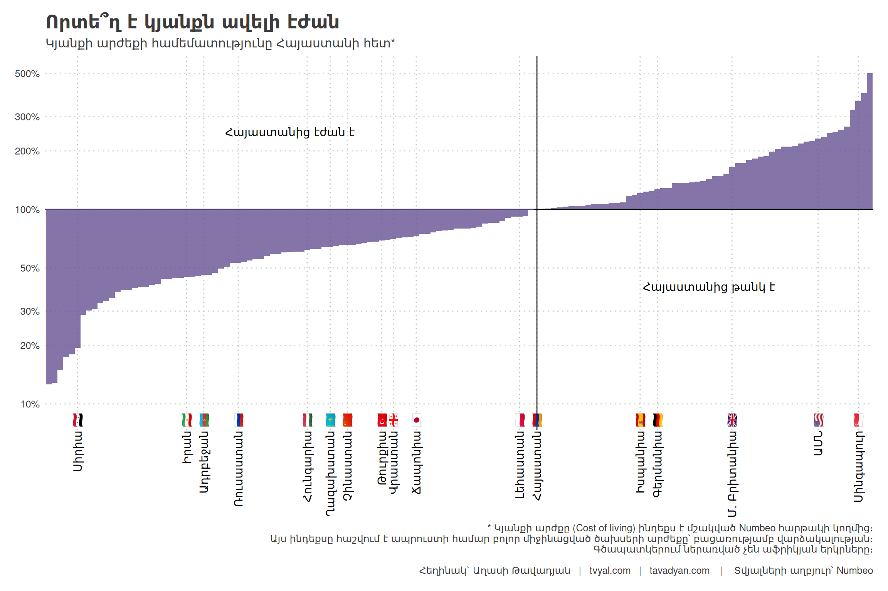

Tvyal Newsletter
English summary below.
Հարգելի գործընկեր,
Հուսով եմ՝ լավ եք: Ներկայացնում եմ այս շաբաթվա վերլուծությունները և աշխատանքները.
👛💨💰 Դատարկ գրպաններ, բարձր աշխատավարձր
Բարձր աշխատավարձեր, բարձր ծախսեր. Հայաստանի տնտեսական մրցունակության վերլուծություն
Այս շաբաթվա տնտեսական վերլուծությունն առնչվում է Հայաստանի տնտեսության տարբեր ասպեկտներին՝ համեմատություններ անցկացնելով հարևան երկրների և գլոբալ տնտեսական հսկաների հետ: Մեր վերլուծությունը հիմնված է Numbeo-ի տվյալների վրա, որը սպառողական գների և կյանքի որակի այլ ցուցանիշների գլոբալ շտեմարան է:
Նախորդ ուսումնասիրություններում մենք բացահայտել ենք Հայաստանի տնտեսության առջև ծառացած մի շարք էական մարտահրավերներ: 2023 թվականին Երևանը դարձել է ամենաթանկ քաղաքը տարածաշրջանում՝ գերազանցելով նույնիսկ Մոսկվային: Ըստ Numbeo-ի տվյալների 2023 թցականի վերջին, Երևանում նույն կենսամակարդակը պահպանելու համար անհրաժեշտ էր ամսական 3,246.3 դոլար, մինչդեռ Մոսկվայում՝ 2,909.4 դոլար: Սպառողական գները Երևանում 15.1%-ով բարձր էին, քան Մոսկվայում, իսկ վարձակալության գները՝ 4.8%-ով: Այժմ այս ցուցանիշները որոշակի փոփոխություն են գրանցել։ Երևանում անհրաժեշտ է 3,735.0 դոլար, իսկ Մոսկվայում` 3,573.5 դոլար։ Սպառողական գները արդեն 11.1%-ով բարձր են, քան Մոսկվայում, իսկ վարձակալության գները՝ 4.5%-ով։ Դեռևս Երևանը Մոսկվայից թանկ է։
Գծապատկեր 1.
2024 թվականի հուլիսի դրությամբ վերջին տվյալների համաձայն, Հայաստանը տարածաշրջանում առաջատար է միջին ամսական աշխատավարձերի առումով (հարկերից հետո)՝ գերազանցելով նույնիսկ Ռուսաստանին 8.1%-ով: Հայաստանում միջին ամսական աշխատավարձը կազմում է 637 դոլար՝ Ռուսաստանի 589 դոլարի համեմատ: Այնուամենայնիվ, այս համեմատությունը չպետք է դիտարկել կոնտեքստից դուրս: Հայաստանի բնակչության 47%-ը բնակվում է Երևանի մետրոպոլիայի տարածքում, մինչդեռ Ռուսատանի բնակչության միայն 18%-ն է ապրում Մոսկվայի մետրոպոլիայի տարածքում: Ավելին, մեր վերջին վերլուծությունը ցույց է տալիս, որ Հայաստանում մասնավոր հատվածի աշխատատեղերի 76%-ը կենտրոնացված է Երևանում, ինչը ընդգծում է քաղաքային և գյուղական տարածքների միջև զգալի անհավասարությունը:
Երևանում աշխատատեղերի կենտրոնացումը շարունակում է ուժեղանալ: 2022 թվականին ոչ պետական աշխատատեղերի 76.3%-ը գտնվում էր մայրաքաղաքում՝ նշանակալի աճ գրանցելով նախորդ տարիների համեմատ: Երևանի մասնավոր հատվածը արձանագրել է 19.5% աճ՝ մարզերի համեստ 4.7%-ի համեմատ: Ընթացիկ գնահատականները ենթադրում են, որ այս կենտրոնացումը կարող է բերել նրան, որ Երևանի մասնաբաժինը մասնավոր հատվածի աշխատատեղերի քանակում հասնի 80%-ի:
Գծապատկեր 2.

Կարևոր է նշել, որ թեև հայկական աշխատավարձերը բարձր են թվում տարածաշրջանի երկրների համեմատությամբ, հայկական դրամը 2022 թվականի սկզբից ամենաարժևորված արժույթն է փոխարկելի արժույթների շարքում: Դրամն արժևորվել է 20%-ով այս ժամանակահատվածում՝ փոխարժեքը 2022 թվականի սկզբին 485 դրամ էր մեկ դոլարի դիմաց, այժմ` 386 դրամ: Այս արժևորումը դրական չի անդրադառնում արտահանման վրա և բացասական է ազդում զբոսաշրջության և ՏՏ ոլորտներից ստացվող եկամուտների վրա: Այնուամենայնիվ, այս արժեզրկումը հանգեցրել է նաև դոլարով արտահայտված ներքին աշխատավարձերի աճի՝ նպաստելով մեկ շնչի հաշվով ՀՆԱ-ի և աշխատավարձերի աճին:
Ամբողջական պատկերը ստանալու համար անհրաժեշտ է նաև ուսումնասիրենլ ծախսերը: Տվյալները ցույց են տալիս, որ Հայաստանում մեկ անձի միջին ամսական ծախսերը (բացառությամբ վարձակալության) ամենաբարձրն են նշված երկրների շարքում՝ կազմելով 732 դոլար: Աշխատավարձերի համեմատ կյանքի բարձր արժեքը մարտահրավեր է միջին հայ սպառողի համար:
Գծապատկեր 3.

Երորդ գծապատկերում պատկերված աշխատավարձերի և ծախսերի հարաբերակցությունը պատկերացում է տալիս գնողունակության և կենսամակարդակի մասին: Հայաստանում այս հարաբերակցությունը կազմում է 87%, ինչը նշանակում է, որ միջին աշխատավարձերը ծածկում են միջին ծախսերի միայն 87%-ը: Թեև սա ավելի բարձր է, քան Ադրբեջանում և Վրաստանում, այն զիջում է Ղազախստանին, Ռուսաստանին և Թուրքիային, որտեղ միջին աշխատավարձերը գերազանցում են միջին ծախսերը: Օրինակ, Ռուսաստանում աշխատավարձերը ծածկում են ծախսերի 111%-ը՝ թողնելով միջինում 11% այլ ծախսերի կամ խնայողությունների վրա:
Դիտարկենք նաև գծապատկերում ներկայացված այլ պետությունները: Ստորին մակարդակում Սիրիայի հարաբերակցությունը ընդամենը 10.7% է՝ արտացոլելով լուրջ տնտեսական մարտահրավերները: Իրանը և Ադրբեջանը նույնպես դժվարանում են՝ ունենալով 80%-ից ցածր հարաբերակցություններ: Այլ կողմում՝ զարգացած տնտեսություններ, ինչպիսիք են Միացյալ Նահանգները, Գերմանիան և Սինգապուրը, ցույց են տալիս 300%-ից բարձր հարաբերակցություն՝ վկայելով զգալիորեն ավելի բարձր գնողունակության և խնայողությունների պոտենցիալի մասին:
Գծապատկեր 4.

Ուսումնասիրենք նաև հիփոթեքային տոկոսադրույքները։ Հայաստանում առկա է ամենաբարձր հիփոթեքային վարկի տոկոսադրույքներից մեկը՝ 15% (20-ամյա ֆիքսված տոկոսադրույքով հիփոթեքի համար): Այս բարձր դրույքաչափը զգալի խոչընդոտներ է ստեղծում սեփական գույք ունենալու համար առանց հիփոթեքային վարկից եկամտահարկի վերադարձի: Համեմատության համար, այնպիսի երկրներ, ինչպիսիք են Ճապոնիան (1.65%), Գերմանիան (3.51%) և Իսպանիան (3.47%), առաջարկում են շատ ավելի բարենպաստ պայմաններ տուն գնողների համար: Տարածաշրջանի հարևանները, ինչպիսիք են Ադրբեջանը (9.09%) և Վրաստանը (11.7%), առաջարկում են ավելի մատչելի հիփոթեքային տարբերակներ:
Կյանքի արժեքի ուսումնասիրություն։ Numbeo-ի Կյանքի արժեքի ինդեքսը տրամադրում է սպառողական ապրանքների գների համեմատական չափում, ներառյալ մթերքը, ռեստորանները, տրանսպորտը և կոմունալ ծառայությունները, բայց բացառելով վարձակալությունը:
Այս վերլուծության մեջ մենք նորմալացրել ենք ինդեքսը Հայաստանի նկատմամբ (սահմանված 100%) այլ պետությունների համեմատ: Արդյունքները մտահոգիչ են Հայաստանի տնտեսական մրցունակության տեսանկյունից: Առաջին գծապատկերում նշված բոլոր հարևան երկրներն ունեն ավելի ցածր կյանքի արժեք Հայաստանի համեմատ: Բացի այդ, այնպիսի երկրներ, ինչպիսիք են Հունգարիան, Չինաստանը, Լեհաստանը և նույնիսկ Ճապոնիան, ցույց են տալիս կյանքի արժեքի ավելի բարենպաստ ինդեքսներ:
Մասնավորապես՝
- Իրանում կյանքի արժեքը կազմում է Հայաստանի 60.4%-ը
- Ռուսաստանում՝ 71.6%
- Ղազախստանում՝ 71.8%
- Ադրբեջանում՝ 74.2%
- Վրաստանում՝ 79.8%
Գծապատկեր 5.

Այս տվյալների լույսի ներքո ծագում են մի շարք հարցեր Հայաստանի տնտեսական մրցունակության վերաբերյալ: Առաջին հերթին, որքանո՞վ է հայ աշխատողն իրապես մրցունակ տարածաշրջանի այլ երկрների աշխատուժի համեմատ, հաշվի առնելով բարձր աշխատավարձերը և կյանքի արժեքը: Երկրորդ, ինչպե՞ս է այս իրավիճակն ազդում Հայաստանի՝ որպես ներդրումային հարթակի գրավչության վրա: Արդյոք օտարերկրյա ներդրողները կնախընտրե՞ն ներդնել Հայաստանում՝ հաշվի առնելով աշխատուժի համեմատաբար բարձր արժեքը, թե՞ կգերադասեն ավելի ցածր աշխատավարձեր ունեցող հարևան երկրները:
Հայաստանում կյանքի այս բարձր արժեքը, զուգակցված աշխատավարձի և ծախսերի հարաբերականորեն ցածր հարաբերակցության հետ, զգալի մարտահրավերներ է ներկայացնում տնտեսական աճի և կյանքի որակի բարելավման համար: Այս իրավիճակը հատկապես ազդում է միջին և ցածր եկամուտ ունեցող քաղաքացիների վրա, ովքեր ստիպված են ավելի մեծ մասնաբաժին հատկացնել իրենց եկամուտներից հիմնական կարիքները բավարարելու համար:
Եթե հնարավոր է, խնդրում եմ այս նյութը ուղարկել նաև այն մարդկանց, ում այն կարծում եք կարող է հետաքրքրել:
ԱՅՍ ՀՈԴՎԱԾԻ ՀՂՈՒՄԸ
Թավադյան, Աղ․Ա․ (2024)․ Դատարկ գրպաններ, բարձր աշխատավարձր [Empty Pockets, High Salaries]․ Tvyal.com հարթակ [Tvyal.com platform], 12-08-2024․ https://www.tvyal.com/newsletter/2024/2024_08_12
Արգելվում է այս հարթակի նյութերը արտատպել առանց հղում կատարելու։
* Այս և մեր բոլոր այլ վերլուծությունների տվյալները վերցված են պաշտոնական աղբյուրներից։ Հաշվարկները ամբողջությամբ հասանելի են github-ում, դրանք կարելի է ստուգել` այցելելով github-ի մեր էջը, որտեղ տրված են տվյալները, հաշվարկների և գծապատկերների կոդը։
ՀԱՄԱԳՈՐԾԱԿՑՈՒԹՅՈՒՆ
Եթե ուզում եք ձեր տվյլներից օգուտ քաղել AI գործիքներով` ԴԻՄԵՔ ՄԵԶ
ՄԻԱՑԵՔ ՄԵՐ ԹԻՄԻՆ
ԶԼՄ հաղորդագրություն
Հարկահավաքաքության և տնտեսության այլ առանցքային խնդիրների վերաբերյալ դիտեք այս հարցազրույցը
📺 Մեր ավանդական ապրանքների արտահանումը անկում է ապրում. Աղասի Թավադյան 📺

English Summary
👛💨💰 Empty Pockets, High Salaries
High Wages, High Costs: An Analysis of Armenia’s Economic Competitiveness
Recent data from Numbeo reveals that Yerevan, Armenia’s capital, remains one of the most expensive cities in the region, surpassing even Moscow in terms of living costs. As of July 2024, Armenia leads the region in average monthly wages after taxes, with $637 compared to Russia’s $589. However, this seemingly positive statistic is offset by high living costs, with monthly expenses (excluding rent) in Armenia being the highest among compared countries at $732. The wage-to-expense ratio in Armenia is 87%, meaning average wages cover only 87% of average expenses, lagging behind countries like Kazakhstan, Russia, and Turkey where wages exceed expenses.
The economic landscape in Armenia presents significant challenges. The country has one of the highest mortgage interest rates in the region at 15% for a 20-year fixed-rate mortgage, making homeownership difficult. The cost of living index, normalized to Armenia (100%), shows neighboring countries and even some developed economies like Japan having more favorable living costs. This high cost of living, coupled with the relatively low wage-to-expense ratio, poses substantial challenges for economic growth and quality of life improvement, particularly affecting middle and low-income citizens. The situation is further complicated by the concentration of private sector jobs in Yerevan (76% of all private sector jobs) and the significant appreciation of the Armenian dram since early 2022, which impacts exports and income from tourism and IT sectors.
Հարգանքներով,
Աղասի Թավադյան
12.08.2024
tvyal.com
tavadyan.com
Was this email forwarded to you? Subscribe here.
Ուշադրություն. Ձեր էլ.փոստը մեյլլիսթի մեջ է, որի միջոցով ես կիսվում եմ շաբաթական նյութեր, որոնք հիմնականում ներկայացնում են Հայաստանի տնտեսությունը: Նյութերը ներառում են գծապատկերներ, տվյալների բազաներ, տեսանյութեր, հոդվածներ, առցանց վահանակներ, տնտեսական գործիքներ, կանխատեսումներ և հաշվետվություններ: Եթե ցանկանում եք չեղարկել բաժանորդագրությունը, խնդրում եմ տեղեկացրեք ինձ, և ես կհեռացնեմ ձեր էլ. փոստը ցուցակից: Գրեք նաև եթե ունեք մենկնաբանություններ: